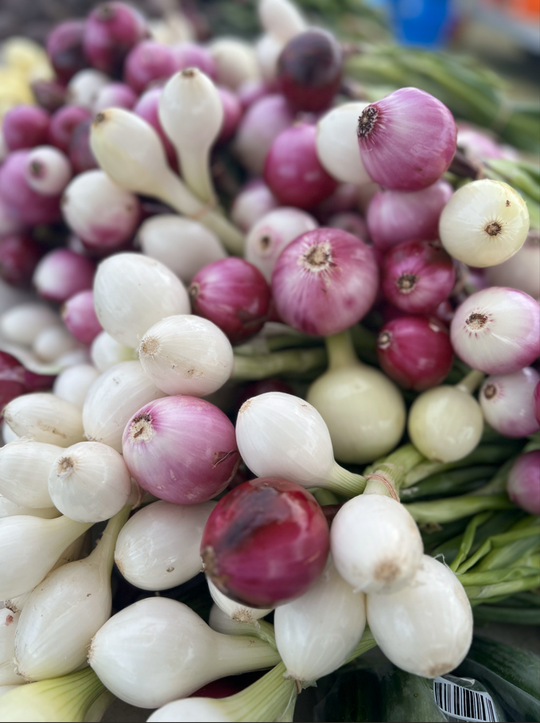

Where to find Markets
Avenue Calgary presents local year round market list,
summer lists as well as markets just outside Calgary
City Limits.

Avenue Calgary presents local year round market list,
summer lists as well as markets just outside Calgary
City Limits.
Supporting local farmers/Growers promotes food security, sustains local economies, and fosters community resilience by ensuring fresh, nutritious produce and supporting small-scale agriculture. It also reduces carbon footprint by minimizing transportation and encourages sustainable farming practices.
Supporting local crafters fosters creativity and preserves cultural heritage while bolstering the local economy. By purchasing handmade goods, you contribute to the uniqueness of your community and directly support artisans' livelihoods, promoting a vibrant and diverse cultural landscape.